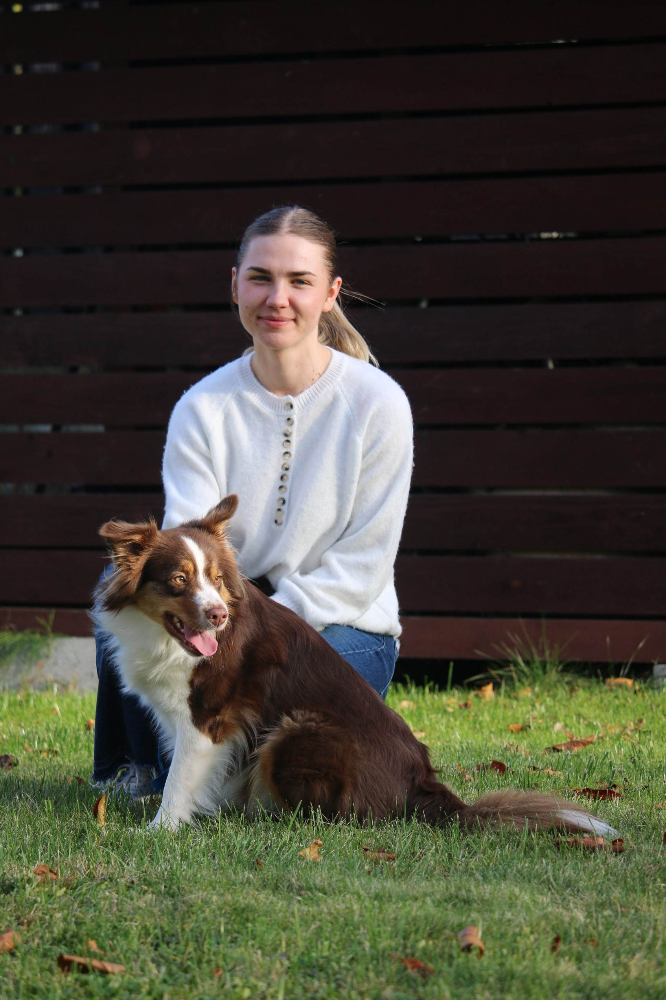

Rozszyfruj Psa
Gabriela Hopek
Behawiorysta psów w Krakowie, Nowym Sączu i okolicach. Pomagam zrozumieć Twojego czworonoga – konsultacje behawioralne i szkolenia.
O mnie
Jestem certyfikowanym behawiorystą psim i od lat pomagam opiekunom zrozumieć, co ich pies próbuje im powiedzieć. Pracuję stacjonarnie i dojazdowo w Krakowie, Nowym Sączu oraz okolicznych miejscowościach (m.in. Limanowa, Gorlice, Piwniczna-Zdrój, Rytro) – spotkania możliwe są też online. W pracy opieram się wyłącznie na metodach pozytywnego wzmacniania – bez krzyku, siły i kar, bo prawdziwa zmiana rodzi się z poczucia bezpieczeństwa. Moim celem jest zbudowanie silnej i zdrowej więzi między Tobą a Twoim psem, opartej na zaufaniu oraz wzajemnym zrozumieniu.
Moja oferta
Każdy pies jest inny, dlatego zawsze zaczynamy od poznania Twojego czworonoga i Waszej codzienności. Poniżej znajdziesz formy współpracy, które proponuję najczęściej.
Konsultacja behawioralna
Rozwiązywanie problemów takich jak lęk, agresja, czy ciągnięcie na smyczy.

Wychowanie szczeniaka
Psie przedszkole, nauka czystości, socjalizacja i budowanie dobrych nawyków od pierwszych dni.

Spacery socjalizacyjne
Kontrolowane spacery z innymi psami, nauka komunikacji i wyciszenia w trudnych warunkach.

Jak wygląda współpraca krok po kroku
Nie musisz się przygotowywać ani niczego wiedzieć na start - wystarczy, że opowiesz mi o swoim psie. Resztą zajmiemy się razem.
- Kontakt: Dzwonisz do mnie, aby krótko opisać problem.
- Ankieta: Wypełniasz szczegółowy kwestionariusz dotyczący zachowania psa.
- Spotkanie: Widzimy się na żywo w Twoim domu lub na spacerze (albo online).
- Plan działania: Otrzymujesz indywidualny plan treningowy i wsparcie po konsultacji.
Opinie moich klientów
Burek ciągnął na smyczy tak mocno, że spacery były dla mnie koszmarem i wychodziłam z domu z duszą na ramieniu. Po konsultacji dostaliśmy prosty plan i konkretne ćwiczenia na każdy tydzień - dziś chodzimy razem, spokojnie, a nie na wyścigi.
Kasia i pies Burek
Luna trafiła do nas jako rozbrykany szczeniak, który gryzł wszystko, co znalazł, i nie potrafił się wyciszyć. Dzięki wskazówkom nauczyła się czystości, zostawania sama w domu i kultury na spacerze. Polecamy każdemu świeżo upieczonemu opiekunowi!
Marek i suczka Luna
Kontakt i umówienie wizyty
Zadzwoń do mnie, aby umówić się na konsultację: +48 781 116 891
Przyjmuję klientów z Krakowa, Nowego Sącza i okolicznych miejscowości w Małopolsce. Jeśli nie odbieram, prawdopodobnie prowadzę właśnie konsultację lub jestem na spacerze z psem. Zostaw wiadomość SMS, a na pewno oddzwonię najszybciej jak to możliwe!
© Rozszyfruj Psa. Wszelkie prawa zastrzeżone. Design: HTML5 UP.